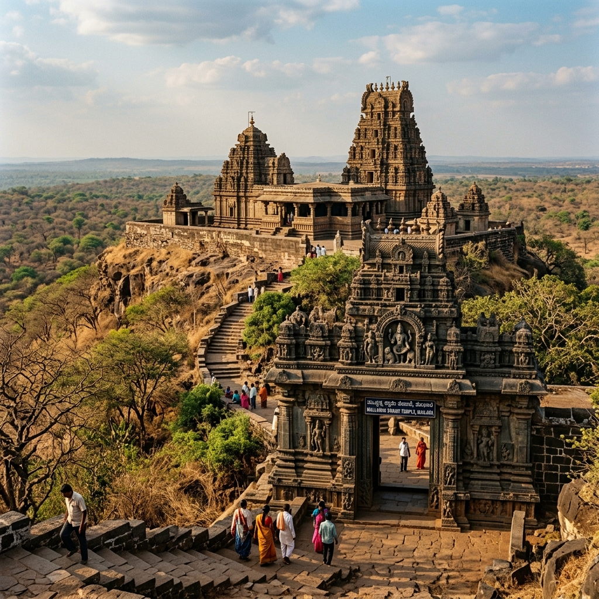
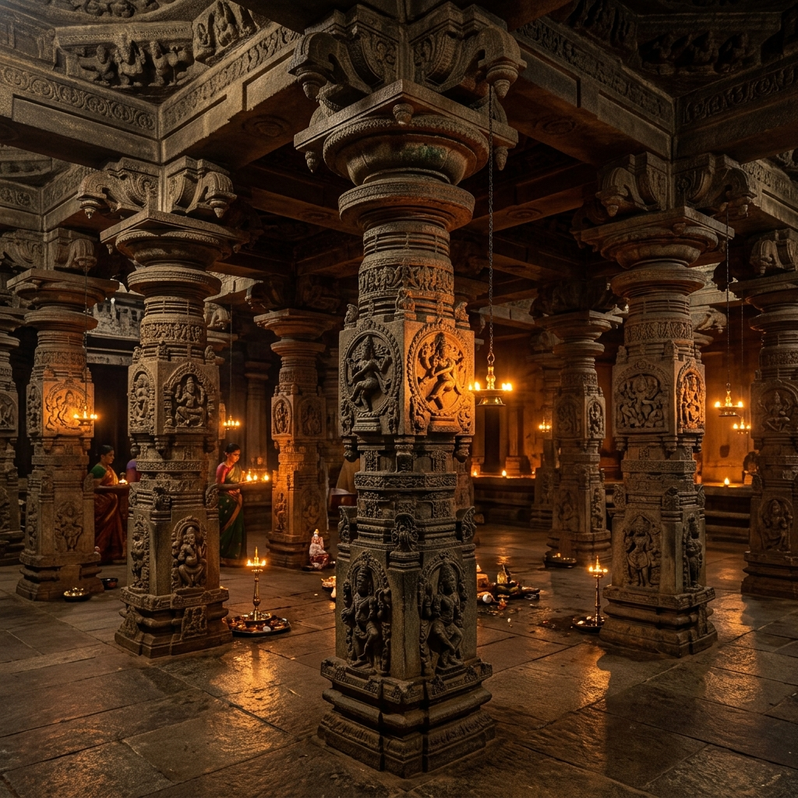
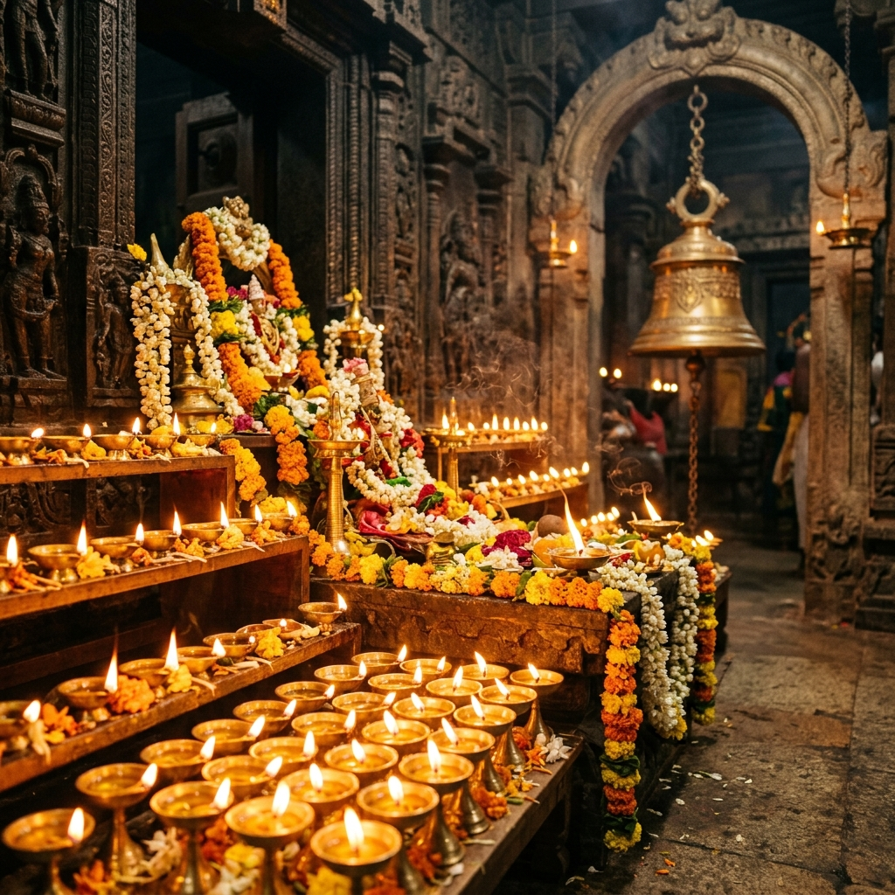

Temples Along
the Regional Trail
Explore the six prominent temples of this spiritual circuit, each offering a unique window into the heritage of the Deccan region.
 Active Site
Active Site
Shri Sangameshwara Temple
Nestled inside Kosam village, this sacred Shiva shrine represents the guardian deity of the surrounding farming communities. Known for its quiet countryside serenity, traditional harvest offerings, and uncommercialized atmosphere.

~15 KMMailar Mallanna Mandir
Perched on a scenic hilltop in Khanapur village, this highly revered temple is dedicated to Lord Mallanna (Khandoba / Martanda Bhairava). Famous for its vibrant Bhandara tradition where turmeric powder is thrown.

~17 KMShani Mahatma Mandir
A powerful temple dedicated to Lord Shani (Saturn), located within the Mailar-Velaspur religious circuit. Devotees gather here in large numbers on Saturdays to perform oil rituals to ward off planetary obstacles.

~18 KMManik Prabhu Mandir
Located in Maniknagar, Humnabad, this is the main seat of the Manik Prabhu Avadhuta Sampradaya. Dedicated to the 19th-century saint Shri Manik Prabhu Maharaj, who was revered as an incarnation of Lord Dattatreya.
~16 KM
Vitthal Rukmini Mandir
Situated near the Velaspur forest borders, this temple dedicated to Lord Vitthal (Krishna) and Goddess Rukmini serves as the local center for the Warkari Bhakti tradition, holding daily abhanga chanting sessions.
 ~16 KM
~16 KM
Gaimukh Temple
A unique rock-cut temple inside the Velaspur forest valley, where a natural perennial water spring flows out from a cow-mouth shaped stone. Pilgrims visit here to wash away sins and seek healing blessings.